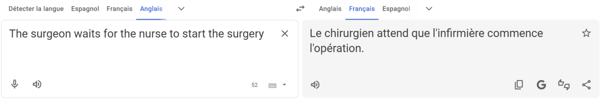
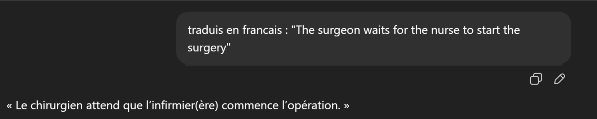
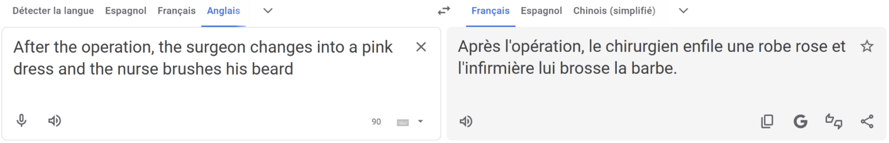

Des injustices généralisées
Je vous propose une petite expérience : un simple exercice de traduction qui nous permettra de prendre conscience de l’étendue des biais de certains outils informatiques. Il s’agit de traduire vers le français la phrase “The surgeon waits for the nurse to start the surgery”. L’anglais étant neutre en genre, c’est à nous de choisir le genre des protagonistes.


Il faut bien l’avouer, nous-mêmes humains avons tendance à parler de chirurgien et d’infirmière, alors on n’est pas si étonnés de voir Google Traduction et Chat GPT tomber dans le même stéréotype… (j’ai même eu la chance ici d’avoir une écriture inclusive pour permettre aux hommes d’accéder au métier d’infirmier, mais la chirurgie reste une affaire d’hommes)
Mais si l’on ajoute des indices de contexte autour, par exemple “After the operation, the surgeon changes into a pink dress and the nurse brushes his beard”, l’humain sera forcé de se rendre à l’évidence : il a affaire à une chirurgienne et à un infirmier. Sans surprise, Google Traduction (qui n’a jamais été particulièrement doué pour prendre en compte le contexte) nous parle d’un chirurgien en kilt et d’une infirmière-barbière au service de celui-ci (qu’est-ce qu’on rigole !).

Et l’IA alors ? Elle qui a justement été créée pour mieux manipuler le langage humain, à l’échelle d’un texte entier, et non plus d’un mot comme le faisait l’antique dictionnaire…
Et bien elle ne vaut pas mieux !
Ce petit exemple, qu’il vous fasse réfléchir, qu’il vous indigne ou qu’il vous amuse n’est pas si lourd en conséquences, mais les biais -en particulier lorsqu’on parle d’outils IA- s’immiscent dans des processus de nos vies quotidiennes. En témoigne l'affaire Amazon : entre 2014 et 2017, l'entreprise a développé un outil d'intelligence artificielle destiné à automatiser le tri des candidatures pour ses postes d'ingénieurs. L'algorithme avait été entraîné sur dix ans de CV reçus par l'entreprise — c'est-à-dire sur dix ans de candidatures, en grande majorité masculines, de la part de candidats recrutés dans un secteur lui-même dominé par les hommes. Résultat : l'outil a appris à pénaliser les CV contenant des mots genrés au féminin (comme dans « women's world chess championship »), entre autres. Amazon a finalement abandonné ce projet en 2018, mais il illustre parfaitement comment un manque de diversité en amont, dans les données qui le nourrissent se traduit en discrimination concrète en aval.
L’explication du phénomène de biais des IA réside dans la nature même de celles-ci. Elles sont entraînées grâce à des données qui, idéalement, sont suffisamment nombreuses et représentatives pour refléter le réel. Mais le « réel » qu'elles reflètent est le réel d'hier -au mieux celui d’aujourd’hui-, avec ses inégalités, ses stéréotypes, ses angles morts. Une IA sans garde-fous reproduit et amplifie les biais existants, au lieu de les questionner. L’IA n’aurait jamais pris la Bastille en 1789, ni n’aurait lancé le mouvement #MeToo…
Mais quel lien entre les données d'entraînement et la diversité des équipes de programmeurs ? Romane, RH chez Coexia a justement traité le sujet dans son mémoire. Je suis heureuse de lui laisser la parole :